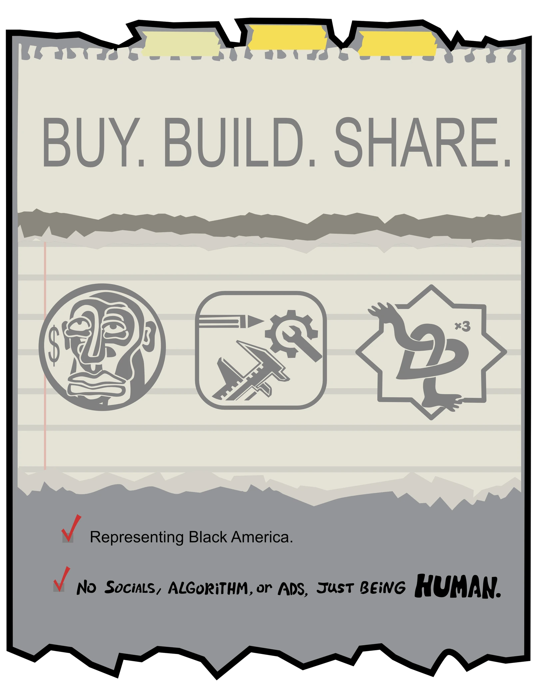
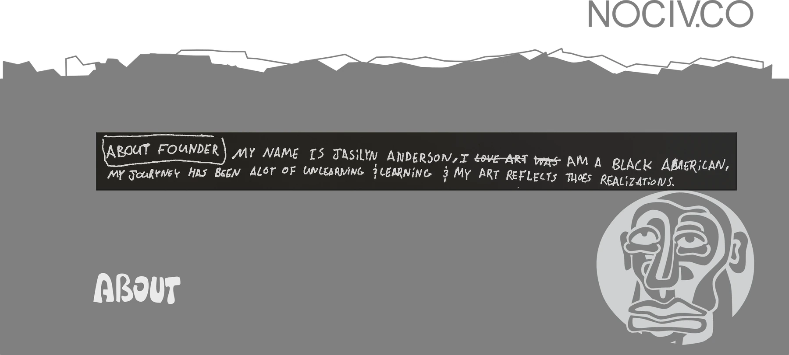

NOCIV is a Black-owned creator brand from Arizona.
We sell clothes and give away tools. Most brands only let you buy. We let you make too.
Restoring the balance between the people who buy and the people who sell.
Our clothes reclaim what "American" looks like. No ads. No algorithm. If you're here, someone told you.
"Maker" got claimed by tech. "Creator" got claimed by content. "Artist" means painter. "Polymath" sounds like a math test.
NOCIV is traditional in exactly one way: what it means to be a creator. To make things.
We are all creators.
The internet is the starting point, not the destination. A shirt, a zine or a tool here should lead somewhere real: a pop-up, a conversation, or something you made with your own hands.
It isn't about going backward, or pretending we can return to a previous era. It's a reminder that the systems, objects, and norms around us aren't permanent features of nature, because somebody built them. We buy things without knowing who made them, and live inside social norms as if they simply exist on their own. But every system, tool, and product was constructed by people.
We built this world. Which means we can build something else.
Every idea starts with a gap between vision and action. You can ignore it, wait for someone else, or begin.

Three honest ways in. You choose how far you go.
Get something made by NOCIV: clothing, prints and art. Support the brand and take home something real. Shop
Use the free tools: Zine, Cut & Sew, Stencil, Cards, Camera, Cartoon and Billboard. Go deeper with Case Zero hardware, or From Scratch to make your own website. Tools
Show up at the Base: the Stall Wall, the Directory and Spread the Word. No purchase required. Base
NOCIV is built in Arizona. Arizona is home.
Born in California and raised in Texas before moving to Arizona, identity has always been a hybrid experience for me, but a brand needs to physically exist somewhere to build real community.
Arizona is where NOCIV collaborates, hosts, crafts, and builds in person. Those connections start locally, but they travel globally.
NOCIV is Arizona based, not Arizona limited.
NOCIV is a Black American owned company, and that foundation shapes everything we create. Our roots in this country run deep. Black Americans didn't just survive here. We built, adapted, and forged a culture that continuously shapes world history.
We know who we are. We are not lost. We are here.
Representing Black America means honoring that legacy without flattening it into caricature, not just sanitized "Black excellence" or historical stereotypes, but Black life in all its nuances, contradictions, regional styles, and creative expressions.
We create from this history and express it as something living, active and present.

I'm Jasilyn Anderson, also known as Lofty Lyn. Black American. A creative individual.
My journey has been a lot of unlearning and learning. I start most things knowing nothing, figure them out one piece at a time, and end up holding something real that didn't exist before. Art, textiles, screen printing, hardware, code, writing. I never picked one, and the words for people like me never fit. So I stopped looking for one. I make things. That makes me a creator, the old way.
That's why NOCIV sells clothes and gives the tools away. Not "own nothing and be happy." Own what you make.
Question about an order, a custom piece, a collab, a spot for a pop-up? Write it here. It comes straight to me.